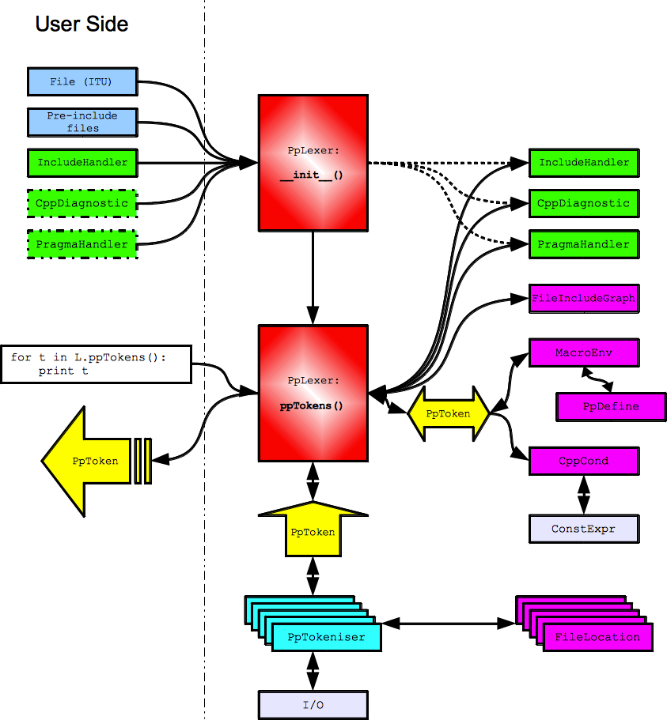

CPIP is a C/C++ pre-processor implemented in Python. Most pre-processors regard pre-processing as a dirty job that just has to be done as soon as possible. This can make it very hard to track down subtle defects at the pre-processing stage as pre-processors throw away a lot of useful information in favor of getting the result as cheaply as possible.
Few developers really understand pre-processing, to many it is an obscure bit of black magic. CPIP aims to improve that and by recording every detail of preprocessing so CPIP can can produce some wonderfully visual information about file dependencies, macro usage and so on.
CPIP is not designed to be a replacement for cpp (or any other established pre-processor), instead CPIP regards clarity and understanding as more important than speed of processing.
CPIP takes its standard as C99 or, more formally, ISO/IEC 9899:1999 (E) [1].
The basic task of any preprocessor is to produce a Translation Unit for a compiler to work with. To do this the pre-processor has to do three inter-related tasks [2]:
CPIP supports file inclusion just like any other pre-processor. In fact it goes further as CPIP recognises that whilst the C99 standard (and any other standard) specifies the syntax of the #include statement it leaves it as implementation defined how the file is located.
CPIP provides a reference implementation that behaves as CPP/RVCT/LLVM behave. CPIP also allows users to construct their own include handlers that obtain files from, for example, a URL or database.
CPIP supports all conditional compilation statements. What is more CPIP can generate a conditionally compiled view of the source code which makes it much easier to see what part of the code is active.
CPIP supports macro replacement according to C99, CPIP keeps track of where macros were defined (and undefined) and where they were either tested (by an #if statement for example) or used in a substitution. All this information is available using public APIs after CPIP has finished processing a Translation Unit.
Macros represent one of the most complicated parts of preprocessing, it seems simple doesn’t it? But consider this source code:
#define f(a) a*g
#define g(a) f(a)
f(2)(9)
What is the result of the last statement?
It is either:
2*f(9)
Or:
2*9*g
Which is it? Puzzled? Well the C standards body responded thus:
“The C89 Committee intentionally left this behavior ambiguous as it saw no useful purpose in specifying all the quirks of preprocessing for such questionably useful constructs.” [3]
So any pre-processor implementation could produce either result at any time and it would still be a compliant implementation.
CPIP is capable of doing all these aspects of preprocessing and it produces a Translation Unit just like any other pre-processor.
What makes CPIP unique is that it retains all pre-processing information discovered along the way and can present it in many ways. CPIP provides a number of interfaces to that information, not least:
CPIP provides a set of Command Line Tools built round a core of Python code. The architecture of this core code is illustrated below, at the heart of it is the PpLexer. The user interacts with this in two ways:
Processing the file (and its #include‘s) token by token.
For the PpLexer its construction is fairly straightforward; it just takes a reference to the user supplied objects.
Processing the ITU is a more serious matter. The PpLexer uses a PpTokeniser to generate pre-processing tokens (shown in yellow below) according to translation phases one to three. The PpTokeniser also keeps track of logical to physical file location.
Depending on the parser state the PpLexer may/may not pass the token to various internal objects (shown in purple below) that keep track of:
The resulting token (if any) after that processing is yielded to the user.
An extremely useful feature of CPIP is that the PpLexer maintains all these data structures and provides an interface to them for the user. Some examples of what can be done with this information is here: CPIPMain.py Examples.
Footnotes
| [1] | Other standards are of interest: “C++98” [ISO/IEC 14882:1998(E)] describes more limited pre-processing (no variadic macros for example). “C++11” [ISO/IEC JTC 1/SC 22 N 4411 in draft] and C++14 does not substantially change this. In any case CPIP attempts to emulate common custom and practice (yes, including variadic macros). |
| [2] | Of course the preprocessor has to do many other minor tasks such as replacing trigraphs and removing comments. |
| [3] | Rationale for International Standard - Programming Languages - C Revision 5.10 April-2003 Sect. 6.10.3.4 |